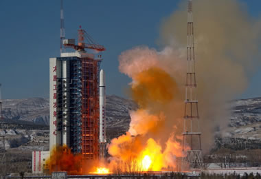

航天科普知识问答2
人类已研制出几种载人航天器？
信息来源: 人民网
人类现已研制出宇宙飞船、航天飞机和空间站3种载人航天器。
神舟号飞船"三舱一段"的作用是什么？
信息来源: 人民网

推进舱是飞船在空间运行及返回地面时的动力装置；返回舱是飞船起飞、飞行和返回过程中航天员乘坐的舱段，也是整个飞船的控制中心；轨道舱是航天员在太空中工作和生活的场所，装有各种实验仪器和设备。附加段也叫过渡段，是为将来与另一艘飞船或空间站交会对接做准备的。在载人飞行交会对接前，它也可以安装各种仪器用于空间探测。
飞船返回地面时，是所有舱段都返回吗？
信息来源: 人民网
不是。飞船返回地面时，只有返回舱一个舱返回地面。返回舱与轨道舱分离后，轨道舱可以留在轨道上继续工作半年左右。
苏联和美国的第一代载人飞船是几舱飞船？
信息来源: 人民网

苏联的第一代"东方"号飞船，是双舱飞船；美国的第一代"水星"6号飞船是单舱飞船，1962年2月20日，美国航天员格伦乘坐该型号飞船环绕地球飞行了3圈。